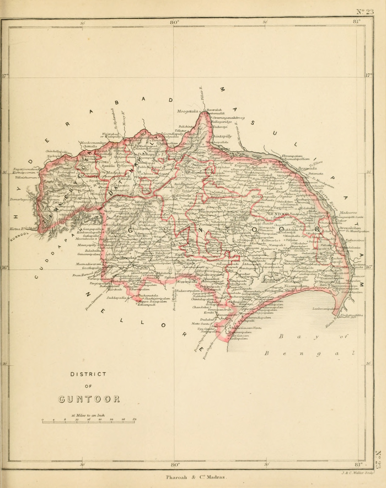
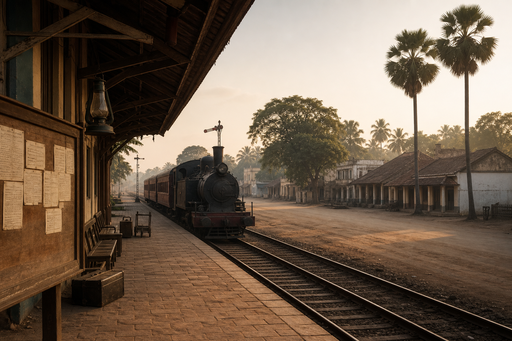

స్వాతంత్ర్యానికి
ఈ పేజీ పదిహేడవ శతాబ్దం చివరి నుండి 15 August 1947 ఉదయం వరకు కొనసాగుతుంది. ఆ ఉదయం తరువాత ఏదీ ఈ కథలో భాగంగా పరిగణించబడదు, ఒక లైన్ మినహా: 1953లో ఏర్పడిన ఆంధ్ర రాష్ట్రం, ఈ సైట్ వెలుపల ఉంది.
స్థలాల పేర్లు వాటి కాలం నాటి మూలాలను అనుసరిస్తాయి: Circar, Kistna, Masulipatam, Bezwada, Palnad, Guntoor.
Circars
గుంటూరులో కలెక్టర్ కూర్చునే చాలా కాలం ముందు, కృష్ణా మైదానం మరియు Palnad కొండల యొక్క అదే విస్తరణకు పాత పరిపాలనా పేర్లు ఉన్నాయి. వరుస హిందూ రాజ్యాల క్రింద దేశం Kondavidu సిమా. గోల్కొండ మరియు తరువాత హైదరాబాద్ సుల్తానుల క్రింద ఇది ముర్తాజానగర్ Circar - ఐదు ఉత్తర Circars లలో ఒకటి. ఆ ఐదు చిక్కకోల్ (శ్రీకాకుళం), రాజమండ్రి, ఎల్లోర్ (ఏలూరు), ముస్తఫానగర్ (కొండపల్లి) మరియు ముర్తుజానగర్ (గుంటూరు).
1687లో గోల్కొండ పతనమైనప్పుడు, హైదరాబాద్తో పాటు Circars ఔరంగజేబు సామ్రాజ్యంలో చేర్చబడ్డాయి. 1724లో దక్షిణాన మొఘల్ వైస్రాయ్ అయిన అసఫ్ జాహ్ ఆచరణలో స్వతంత్రుడయ్యాడు. గుంటూరు యొక్క చివరి-మొఘల్ కథ గోల్కొండ, ఔరంగజేబు మరియు నిజాం ద్వారా కొనసాగుతుంది - కర్ణాటక నవాబుల ద్వారా కాదు.
ఫ్రెంచ్ ప్రధాన కార్యాలయం, 1752–1759
ఈ తీరంలో ఉన్న యూరోపియన్ కర్మాగారాలు గుంటూరులో ఫ్రెంచ్ పాలన కంటే పాతవి. ఆంగ్లేయులు 1611లో నిజాంపట్నం మరియు Masulipatam వద్ద దిగారు. ఫ్రెంచ్ ఉపయోగకరమైన స్థానిక స్థావరం గుంటూరు పట్టణం కాదు, గోదావరి-కృష్ణ కర్మాగార ప్రపంచం. 1723లో వారు Masulipatam నుండి యానాం వద్ద ఒక వాణిజ్య స్థావరాన్ని ప్రారంభించారు.
సలాబత్ జంగ్, నిజాం హోదాకు ఫ్రెంచ్ ఈస్ట్ ఇండియా కంపెనీకి రుణపడి, 1752లో కొండవిడ్ (గుంటూరు) జిల్లాను ఫ్రెంచ్కు ఇచ్చింది, ఆ వెంటనే మరొక Circars ఇచ్చింది. ఫ్రెంచ్ వారు 1752–1759లో గుంటూరు పురాతన గ్రామంలో జిల్లా ప్రధాన కార్యాలయాన్ని ఏర్పాటు చేశారు. ఆ సంవత్సరాల్లో గుంటూరు పట్టణం యూరోపియన్ పరిపాలనా స్థానంగా మారిందనడానికి ఇది బలమైన తేదీ ప్రకటన - 1750లలో గ్రామం కనుగొనబడలేదని.
1911 ఎన్సైక్లోపీడియా బ్రిటానికా మరింత జాగ్రత్తగా రాసింది, పట్టణం "18వ శతాబ్దంలో ఫ్రెంచ్ వారిచే స్థాపించబడినట్లు కనిపిస్తుంది." కంచెను ఉంచండి. గ్రామం పాతది. ఫ్రెంచ్ వారు దానిని ప్రధాన కార్యాలయంగా చేశారు.
1759లో, Masulipatam యొక్క బ్రిటిష్ ఆక్రమణ ద్వారా, గుండ్లకమ్మ నుండి చిల్కా సరస్సు వరకు ఉన్న సముద్ర ప్రాంతాలు ఫ్రెంచ్ నుండి బ్రిటిష్ వారికి చేరాయి. బ్రిటిష్ వారు ఆ తరువాత నిజాం ఆధ్వర్యంలోని ఆ ప్రాంతాలను విడిచిపెట్టారు, Masulipatam పట్టణం మరియు కోటను కంపెనీ ఉంచుకుంది.
కంపెనీ, మరియు గుంటూరు చివరికి ఎందుకు వచ్చింది
గుంటూరు ఒక మధ్యాహ్నం కంపెనీకి పడలేదు. మిగిలిన నాలుగు Circars మొదట వెళ్ళాయి. గుంటూరు సోదరుడి జాగీరుగా నిలిచిపోయింది.
1765లో రాబర్ట్ క్లైవ్ మొఘల్ చక్రవర్తి షా ఆలం II నుండి ఐదు Circars గ్రాంట్ను పొందాడు. 12 November 1766న నిజాం అలీతో పొత్తు ఒప్పందం జరిగింది. 1 March 1768న మసూలీపట్నం ఒప్పందం ద్వారా నిజాం Circars కంపెనీకి రాజీనామా చేశాడు. రెండు ఒప్పందాల ప్రకారం నిజాం సోదరుడు బసాలత్ జంగ్ యొక్క వ్యక్తిగత ఎస్టేట్ అయిన గుంటూరు అతని జీవితకాలంలో మినహాయించబడింది.
బసలత్ జంగ్ 1782లో మరణించారు. 1788లో గుంటూరు బ్రిటిష్ పరిపాలనలోకి వచ్చింది. (1940 నాటి ఒక ఒప్పంద వ్యాసం 1789 అని చెబుతోంది. ఈ సైట్ ప్రామాణిక తేదీ క్లెయిమ్ అయిన 1788ను అనుసరిస్తుంది.) ఆ సంవత్సరం నుండి ఈ ప్రాంతంలో ఒక కంపెనీ కలెక్టరేట్ ఉనికిలో ఉంది. 1823లో నిజాం యొక్క ఉత్తర Circars పై మిగిలిన హక్కులను పూర్తిగా కొనుగోలు చేశారు.
మొదటి సంవత్సరాలు కష్టంగా ఉన్నాయి. ఫ్రైకెన్బర్గ్, ఎలియట్ నివేదికను ఉటంకిస్తూ, 1790–1800 వినాశకరమైనదని పేర్కొన్నారు. July 1791లో వచ్చిన ఒక ఆటుపోటు అల తీరప్రాంత మరియు నదీ గ్రామాలని నాశనం చేసింది; నిలబడి ఉన్న నీరు గుంటలలో నిల్వ చేసిన ధాన్యాన్ని నాశనం చేసింది. 1791–92 యొక్క కరువు చాలా తీవ్రంగా ఉండటంతో పేద కార్మికులలో ఆరో వంతు మంది మరణించారని అంచనా. తరువాతి సంవత్సరం కరువుగా ఉంది.
జిల్లా: 1788, 1859, 1904, 1909
1788 నుండి గుంటూరు ఆ పేరుతో ఒక జిల్లాకు ప్రధాన కార్యాలయంగా ఉంది - పాత గుంటూరు జిల్లా, ఇది తరువాతి సరిహద్దులతో సమానం కాదు. 1859లో ఆ జిల్లా రద్దు చేయబడింది. దాని భూభాగాన్ని Machilipatnam మరియు రాజమండ్రి మధ్య విభజించారు, వాటిని కృష్ణ మరియు గోదావరిగా పేరు మార్చారు, తద్వారా రెండు నదుల యొక్క కొత్త నీటిపారుదల వ్యవస్థల చుట్టూ రెండు పెద్ద జిల్లాలను ఏర్పాటు చేయవచ్చు.
హెన్రీ స్టోక్స్ 1842 నుండి 1852 వరకు కలెక్టర్ మరియు మేజిస్ట్రేట్గా ఉన్నారు. లూథరన్ మిషనరీ J. C. F. హేయర్ను పట్టణానికి ఆహ్వానించిన అధికారి ఆయనే.
జిల్లాను 1 October 1904న తిరిగి ఏర్పాటు చేశారు, ప్రధాన కార్యాలయం మళ్ళీ గుంటూరులో ఉంది, పాత కృష్ణ నుండి Tenali, Bapatla, గుంటూరు, సత్తెనపల్లి, నరసరావుపేట, వినుకొండ మరియు Palnadu తాలూకాలు మరియు నెల్లూరు నుండి Ongole తాలూకాను తీసుకున్నారు. 1911 బ్రిటానికా కొత్త జిల్లా వైశాల్యాన్ని 5,733 చదరపు మైళ్ళుగా మరియు 1901లో ఆ ప్రాంతంలో జనాభాను 1,490,635గా పేర్కొంది. 1 July 1909న Tenali తాలూకాను Tenali మరియు రేపల్లెగా విభజించారు.

పట్టణం: మునిసిపాలిటీ, పత్తి, నీరు
సత్యాలను రెండింటినీ కలిపి ఉంచండి. గుంటూరు గ్రామం ఫ్రెంచ్ వారి కంటే పురాతనమైనది. ఫ్రెంచ్ వారు 1750లలో దీనిని జిల్లా కేంద్రంగా చేశారు. బ్రిటిష్ పట్టణం మరియు మునిసిపాలిటీ తరువాత వచ్చాయి.
గుంటూరు మునిసిపాలిటీ 1866లో ఏర్పడింది. మొదటి ఎన్నికైన సంస్థ 1881లో ఏర్పడింది. మునిసిపాలిటీని 1891లో II-గ్రేడ్గా మరియు 1917లో I-గ్రేడ్గా అప్గ్రేడ్ చేశారు.
1901లో పట్టణంలో 30,833 మంది ప్రజలు ఉన్నారు. ఇది కొండవీడు కొండలకు తూర్పున, దక్షిణ మహారాష్ట్ర రైల్వే యొక్క బళ్ళారి–Bezwada శాఖపై ఉంది. ఇది ప్రెస్లు మరియు జిన్నింగ్ ఫ్యాక్టరీలతో పత్తిలో ముఖ్యమైన వ్యాపారాన్ని కలిగి ఉంది మరియు అమెరికన్ లూథరన్ మిషన్ ద్వారా మద్దతు పొందిన రెండవ తరగతి కళాశాల ఉంది.
జిల్లాలో ఎక్కువ భాగం అప్పటికే, అదే బ్రిటానికా కథనంలో, "Kistna నుండి కాలువల ద్వారా నీటిపారుదల చేయబడిన మరియు పత్తి, బియ్యం మరియు ఇతర పంటలను ఉత్పత్తి చేసే సారవంతమైన మైదానం." కృష్ణానదిపై ఒక ఆనకట్ట గురించి 1798 నుండి చర్చించబడింది. ఈస్ట్ ఇండియా కంపెనీ డైరెక్టర్ల కోర్టు 5 January 1850న ఆ పనిని ఆమోదించింది. ఆనకట్ట మరియు దాని కాలువలు మరియు వరద గట్లు 1852–1855లో నిర్మించబడ్డాయి, దీనిని సర్ ఆర్థర్ కాటన్ రూపొందించారు మరియు కెప్టెన్ ఓర్ నిర్మించారు, ఇది కృష్ణా డెల్టాలో సుమారు 5.8 లక్షల ఎకరాలకు నీటిని అందించడానికి ఉద్దేశించబడింది - ఈ ప్రాంతంలో గుంటూరు వైపు కూడా ఉంది.
దేశీయ పొగాకు ఒక పురాతన వ్యాపారం. 1920 తరువాత, వర్జీనియా పొగాకు గుంటూరులో వ్యాపించింది; 1924 నాటికి పెద్ద ప్రాంతాలు దాని కిందకు వచ్చాయి. పొగబెట్టే కొట్టాలు పెరిగాయి: 1930లో సుమారు 200, 1934లో సుమారు 2,500, 1938 సీజన్ నాటికి దాదాపు 5,000. 1940 నాటి ఒక పత్రికలో నల్ల-నేల ప్రాంతం మిరపకాయలు, వేరుశనగ, పత్తి మరియు సిగార్-పొగాకు కేంద్రంగా చాలా కాలంగా ప్రసిద్ధి చెందిందని, మరియు ఇటీవల సిగరెట్ పొగాకు కోసం ప్రాముఖ్యతను సంతరించుకుందని పేర్కొంది. గుంటూరు యొక్క నల్ల నేలలు అప్పటికే గుర్తించబడిన మిరపకాయల కేంద్రంగా ఉన్నాయని ఇక్కడ ఉపయోగించిన ప్రారంభ తేదీ ప్రకటన ఇది. ఇది స్థాపన సంవత్సరాన్ని ఇవ్వదు.
ఒక పాఠశాల, ఒక కళాశాల, ఒక ఆసుపత్రి
అమెరికన్ లూథరన్ ఉనికి పంతొమ్మిదవ శతాబ్దపు గుంటూరు యొక్క ఉత్తమంగా నమోదు చేయబడిన సామాజిక సంస్థ. ఇది ఒక క్రైస్తవ మిషన్ కథ. ఇది అనేక గుంటూరు కుటుంబాలు మొదట ఒక ఆంగ్ల తరగతి గదిలో లేదా మహిళా వార్డులో ఎలా కూర్చున్నాయో కూడా కథ.
జాన్ క్రిస్టియన్ ఫ్రెడరిక్ హేయర్, అమెరికన్ లూథరన్లచే విదేశాలకు పంపబడిన మొదటి మిషనరీ, కలెక్టర్ స్టోక్స్ ఆహ్వానం మేరకు 31 July 1842 న గుంటూరు చేరుకున్నారు. ఆ July రోజును ఆంధ్ర ఎవాంజెలికల్ లూథరన్ చర్చి ఇప్పటికీ సువార్త దినోత్సవంగా ఉంచుతుంది, ఇది ఈ మిషన్ నుండి పెరిగింది మరియు 1927 లో ఒక చర్చిగా నిర్వహించబడింది. స్టోక్స్ కలెక్టర్ బహుమతిలో ఇప్పటికే ఉన్న ఆంగ్లో-వెర్నాక్యులర్ పాఠశాలను నిర్వహించమని అతన్ని కోరాడు. హేయర్ Palnadu లో కూడా పని ప్రారంభించాడు. గుంటూరు దేశంలో అతని రెండవ సుదీర్ఘ బస 1847–1857.
అమెరికన్ అంతర్యుద్ధ సమయంలో 1863 లో పాఠశాల మూసివేయబడింది, 1873 లో డాక్టర్ ఎల్. ఎల్. ఉహ్ల్ ఆధ్వర్యంలో తిరిగి తెరవబడింది మరియు September 1885 లో, డాక్టర్ ఎల్. బి. వోల్ఫ్ ప్రిన్సిపాల్గా మద్రాస్ విశ్వవిద్యాలయానికి రెండవ తరగతి కళాశాలగా అనుబంధించబడింది. వాట్స్ మెమోరియల్ కోసం 27 June 1889 న భూమిని త్రవ్వారు; కలెక్టర్ ఎ. టి. అరుండెల్ 18 March 1890 న మూలస్తంభాన్ని వేశారు; ఆర్థర్ జి. వాట్స్ జ్ఞాపకార్థం భవనం 17 March 1893 న ప్రారంభించబడింది. మొదటి ఇద్దరు మహిళా విద్యార్థులు 1914 లో వచ్చారు. March 1926 లో కళాశాల మొదటి తరగతికి అప్గ్రేడ్ చేయబడింది; Julyలో ఇది కొత్త ఆంధ్ర విశ్వవిద్యాలయానికి అనుబంధంగా ఉంది; January 1928 లో పేరు ఆంధ్ర క్రిస్టియన్ కాలేజ్ గా మారింది.
విద్యార్థులు కొండా వెంకటప్పయ్య నాయకత్వంలో 1908 లో స్వదేశీ మరియు జాతీయ-విద్య ప్రవాహంలో పాల్గొన్నారు మరియు 1930 లో ఉప్పు / పౌర అవిధేయత క్షణంలో పాల్గొన్నారు.
అన్నా సారా కుగ్లర్ గుంటూరు చేరుకుంది 29 November 1883 న, మొదట ఒక ఉపాధ్యాయురాలుగా, ఎందుకంటే లూథరన్ బోర్డు ఇంకా వైద్య మిషన్కు నిధులు ఇవ్వలేదు. ఆమె December 1885 లో వైద్య మిషనరీగా నియమితులయ్యారు. February 1893 లో ఒక డిస్పెన్సరీ ప్రారంభించబడింది. అమెరికన్ ఎవాంజెలికల్ లూథరన్ మిషన్ హాస్పిటల్ 22 లేదా 23 June 1897 న 50 పడకల ఆసుపత్రిగా శస్త్రచికిత్స, ప్రసూతి మరియు పిల్లల వార్డులు మరియు నర్సింగ్ పాఠశాలతో ప్రారంభించబడింది. కుగ్లర్ 1905 లో కైసర్-ఇ-హింద్ పతకాన్ని అందుకుంది మరియు మళ్ళీ 1917 లో. ఆమె 26 July 1930 న గుంటూరులో మరణించింది; ఆసుపత్రికి ఆమె పేరు పెట్టారు.
Bapatla, 26 May 1913
తెలుగు రాష్ట్రం కోసం డిమాండ్ మొదట ఈ జిల్లా నేలపై బహిరంగ సమావేశ తీర్మానంగా ఉంచబడింది.
26 May 1913 న, మొదటి ఆంధ్ర సమావేశం - ఆంధ్ర మహాసభ - ఎడ్వర్డ్ VII కరోనేషన్ మెమోరియల్ టౌన్ హాల్లో సమావేశమైంది, Bapatla. మద్రాస్ ప్రెసిడెన్సీలోని తెలుగు జిల్లాల నుండి సుమారు 800 మంది ప్రతినిధులు మరియు అనేక వేల మంది సందర్శకులు వచ్చారు. బి. ఎన్. శర్మ నిర్వహణకు నాయకత్వం వహించారు. గుంటూరుకు చెందిన కొండా వెంకటప్పయ్య కార్యదర్శిగా ఉన్నారు. ఇంకా ఉన్నారు: భోగరాజు పట్టాభి సీతారామయ్య, ముత్నూరి కృష్ణారావు, పింగళి వెంకయ్య. వేమవరపు రామదాస్ పంతులు ప్రత్యేక రాష్ట్రం కోసం ఒక తీర్మానాన్ని ప్రతిపాదించారు. మద్రాస్ ప్రెసిడెన్సీలో తెలుగు జిల్లాలలో సుమారు 40 శాతం మంది ప్రజలు మరియు 58 శాతం ప్రాంతం ఉన్నప్పటికీ, వారికి సమర్థవంతమైన గొంతు లేదని వక్తలు వాదించారు.
పాత గుంటూరులో జన్మించిన కొండా వెంకటప్పయ్య (1866–1948), అప్పటికే 1902 లో కృష్ణ పత్రికా స్థాపించారు. అతను గుంటూరు జిల్లా కాంగ్రెస్ కమిటీ అధ్యక్షుడిగా, ఆంధ్ర ప్రావిన్షియల్ కాంగ్రెస్ కమిటీ అధ్యక్షుడిగా 1918–1923, మరియు 1923 లో అఖిల భారత కాంగ్రెస్ కమిటీ కార్యదర్శిగా ఉన్నారు.
సమావేశాలు దశాబ్దాల పాటు కొనసాగాయి. ఈ సైట్ 15 August 1947 న ఆగిపోతుంది. తరువాత 1 October 1953 న ఆంధ్ర రాష్ట్రం ఏర్పడటం తదుపరి అధ్యాయం. అది ఇక్కడ చెప్పబడలేదు.
జాతీయ ఉద్యమం, Tenali కు
గుంటూరు జిల్లా 1904 తరువాత నిశ్శబ్ద మారుమూల ప్రాంతం కాదు. మూడు స్థానిక పేర్లు ఇప్పటికీ ఆల్ ఇండియా రికార్డులో నిలిచి ఉన్నాయి: కొండ వెంకటప్పయ్య (దేశభక్త), దుగ్గిరాల గోపాలకృష్ణయ్య (ఆంధ్ర రత్న), మరియు విస్తృత ఆంధ్ర నాయకత్వం నుండి కానీ ఈ నేలపై పదే పదే, టంగుటూరి ప్రకాశం.
రాజకీయ కథ 1904 కొత్త జిల్లా మరియు 1905 బెంగాల్ విభజనతో ప్రారంభమవుతుంది. Ongole లో 13 July 1906 న జరిగిన బహిరంగ సభ విభజనను దాడి చేసింది. April 1907 లో బిపిన్ చంద్ర పాల్ గుంటూరులో మాట్లాడారు. నరసరావుపేట తాలూకాలో మహాశివరాత్రి సందర్భంగా 1909 లో జరిగిన కోటపకొండ అల్లర్లను, తరువాత కాంగ్రెస్ రచయితలు వందేమాతరం నేపథ్యంలో రాజకీయ సంఘటనగా పరిగణించారు: కొండ జాతరలో పోలీసులు మరియు యాత్రికులు ఢీకొన్నారు. ఇది రాజకీయ మరణానంతర జీవితంతో కూడిన స్థానిక కలకలం, ప్రణాళికాబద్ధమైన సత్యాగ్రహం కాదు.
గుంటూరు జిల్లాలో అప్పటి చిరాల, పెరాల లను 1919 లో మునిసిపల్ హోదా వైపు పెంచారు. సంవత్సరానికి సుమారు రూ. 4,000 గ్రామ ఆదాయం సుమారు రూ. 40,000 మునిసిపల్ డిమాండ్ అయి ఉంటుంది. January 1921 లో నివాసితులు కొత్త పన్నులను తిరస్కరించారు. April 1921 లో Bezwada కాంగ్రెస్ తరువాత గాంధీ చిరాల సందర్శించారు. April 1921 లో సుమారు 15,000 మందిలో 13,000 మంది మునిసిపల్ పరిధిని విడిచిపెట్టి రామనగర్ అనే శిబిరానికి వెళ్లారు, అక్కడ అసెంబ్లీ మరియు ఆర్బిట్రేషన్ కోర్టు ఏర్పాటు చేశారు. దుగ్గిరాల గోపాలకృష్ణయ్య వాలంటీర్ రామ దండును ఏర్పాటు చేశారు. శిబిరం సుమారు పదకొండు నెలలు కొనసాగింది. అతను జైలుకు వెళ్లినప్పుడు, పరిష్కారం ముగిసింది.
క్షామం పట్టిన Palnadu లో ప్రజలు పుల్లరి అటవీ ఉత్పత్తులను, పశుగ్రాసం పన్నును తిరస్కరించారు. మించలపాడుకు చెందిన కన్నెగంటి హనుమంతు పన్ను తిరస్కరణకు నాయకత్వం వహించారు. పోలీసు చర్యలో మరణించారు; తరువాతి జీవిత చరిత్రలు 22 February 1922 అని ఇస్తున్నాయి. January 1922లో Bapatla తాలూకాలోని పెదనాందిపాడులో పర్వతనేని వీరయ్య చౌదరి ఆధ్వర్యంలో పన్ను తిరస్కరణ ఉద్యమం ప్రారంభమైంది. బార్డోలిలో మొదటి ప్రయోగం కావాలనుకున్న గాంధీ, కొండా వెంకటప్పయ్యకు దానిని మూసివేయమని రాశారు; అప్పుడు పన్నులు చెల్లించారు.
సైమన్ కమిషన్ 1927లో పర్యటిస్తూ విజయవాడలో, అప్పుడు గుంటూరు జిల్లాలోని Ongole లో వ్యవస్థీకృత బహిష్కరణను ఎదుర్కొంది. 1930-31లో ఆంధ్ర కాంగ్రెస్ అధ్యక్షుడిగా కొండా తెలుగు జిల్లాల్లో శాసనోల్లంఘనకు బాధ్యత వహించారు. 1930, 1932, 1942లలో జైలు శిక్ష అనుభవించారు. ఆంధ్ర క్రిస్టియన్ కళాశాల గుంటూరులో 1930లో పెద్ద ఉద్యమం, విద్యార్థుల భాగస్వామ్యం నమోదు చేసింది. కోస్తా ఆంధ్రలో మొదటి ఉప్పు తయారీ ఆ వారం సాధారణంగా 6 April 1930న Machilipatnam వద్ద ఉంచబడింది; గుంటూరు పట్టణంలోపల పేరు పెట్టబడిన క్రీక్ చర్య ఇక్కడ ఉపయోగించిన మూలాల్లో లేదు.

Tenali, 12 August 1942
గాంధీ బాంబే పిలుపు తరువాత 8 August 1942, జిల్లా కాంగ్రెస్ సభ్యులు కల్లూరి చంద్రమౌళి, వెలవోలు సీతారామయ్య, అవుతు సుబ్బారెడ్డి Tenali లో 12 August బంద్ కు ప్రణాళిక వేశారు. స్టేషన్ సమీపంలోని హోటల్ పై గుంపులు దాడి చేశాయి, ఉత్తర క్యాబిన్ వద్ద చమురు ట్యాంకర్ కు నిప్పు పెట్టారు, తరువాత స్టేషన్ మరియు చెన్నై ప్యాసింజర్ రైలుకు నిప్పు పెట్టారు. కలెక్టర్, పోలీసు సూపరింటెండెంట్ రిజర్వ్ పోలీసులతో గుంటూరు నుండి వచ్చారు. కాల్పుల్లో ఏడుగురు మరణించారు:
మాజేటి సుబ్బారావు, శ్రీగిరి లింగం, భాస్కరూని లక్ష్మీనారాయణ, తమ్మినేని సుబ్బారెడ్డి, గాలి రామకోటయ్య, ప్రయాగ రాఘవయ్య, జాస్తి అప్పయ్య.
వందలాది మందిపై అభియోగాలు మోపారు. పట్టణంపై రూ. 2 లక్షల జరిమానా విధించారు. బెర్లిన్, టోక్యో రేడియోలు ఈ సంఘటనను ప్రసారం చేశాయి. గుంటూరు పట్టణంలో క్విట్ ఇండియా ప్రదర్శనలను కూడా పిఐబి పేర్కొంది.
15 August 1947
ఆ రోజు ఉదయం గుంటూరు జిల్లా ఇంకా మద్రాసు ప్రెసిడెన్సీ జిల్లాగానే ఉంది. బ్రిటిష్ ఇండియా రాజ్యం ముగిసింది. జెండాలు మారాయి.
ఇంకా మారనిది ఏమిటంటే ప్రావిన్సుల పటం. ప్రత్యేక ఆంధ్ర రాష్ట్రం రావడానికి ఇంకా ఆరు సంవత్సరాల సమయం ఉంది. 1953లో జరిగిన ఆ ఏర్పాటు ఈ సైట్ కథను అనుసరించేందుకు అనుమతిని ముగిస్తుంది. తర్వాతి పేజీ ఎందుకు లేదో ఒక పాఠకుడికి తెలియజేయడానికి మాత్రమే ఇది ప్రస్తావించబడింది.